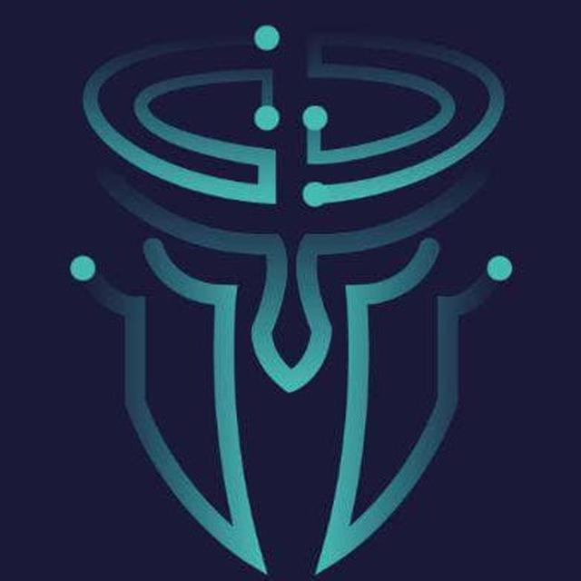

Winter Seminar Series
2022
I was technical staff at
7th WSS
as front-end developer of the website. WSS is a two-day event
consisting of scientific seminars in advanced computer science and
engineering. The Winter Seminar Series (WSS) has been built to
gather successful Iranians from all around the world and create a
professional community in computer science and engineering topics
. Over the years, this seminar has grown to become one of the best
events in the Sharif University of Technology. WSS is for everyone
who works on or interested in any computer science topics and
wants to share and express his ideas and research.

AI Challenge
2021
I was technical staff at
AIChallenge 2021
as member of graphic team. Sharif AI Challenge is a programming
competition for all who are interested in artificial intelligence.
This competition is held in two phases annually. Including an
online and an on-site phase in which competitors will compete in
teams of three in a game designed by technical team.